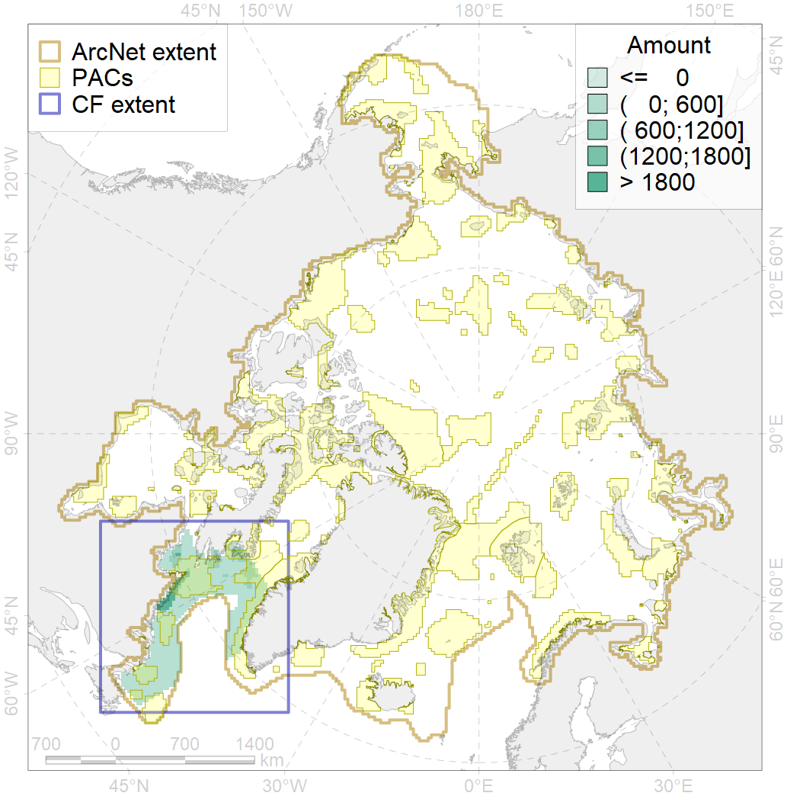
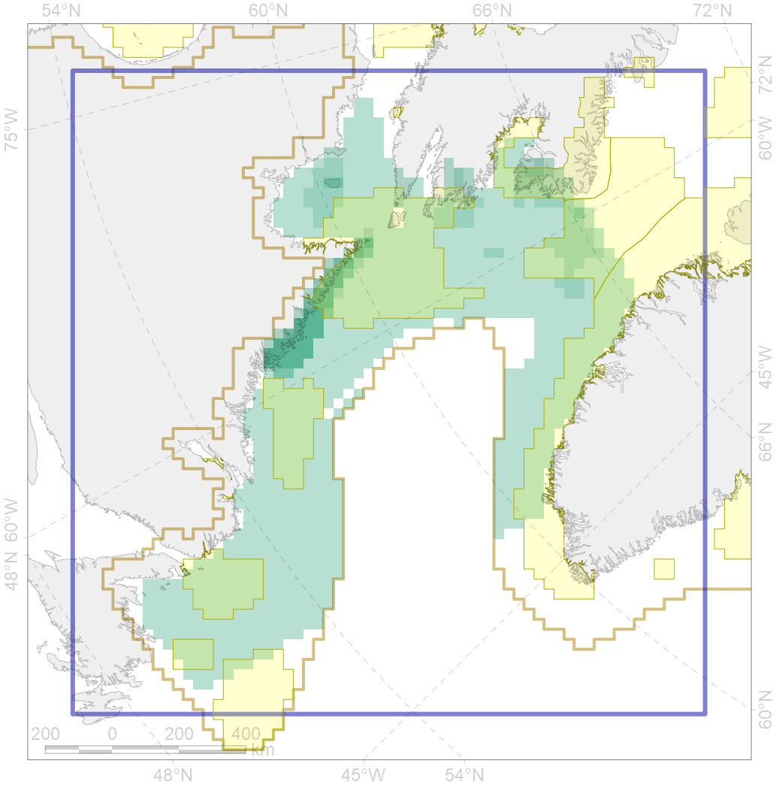

9005

| CF ID | 9005 |
| CF Name | polar bear of the DS (Davis Strait) subpopulation distribution |
| Time Period | 1979-2017 |
| Source(s) | Dyck, 2014 a, b; Boertmann, Mosbech, 2017; Platonov, 2018 |
| Seasonality | January - December |
| Depth Horizon | 0 |
| Methodology | Field data, expert opinion, simulation results. |
| Author Name | Evgeniya Melikhova, Stanislav Belikov |
| Notes | |
| Conservation Target Set in the Scenario | 0.324 |
| Conservation Target Achieved in the Scenario | 0.434 (Scenario: 134.1%) |
| PAC ID | Proportion in the PAC | Contribution to ArcNet Target Achievement | PAC’s Contribution to the Achieved Target |
|---|---|---|---|
| 44 | 0.1% | 0.4% | 0.3% |
| 45 | 8.4% | 23.1% | 17.2% |
| 46 | 4.9% | 13.5% | 10.1% |
| 76 | 26.8% | 77.2% | 57.6% |
| 77 | 1.7% | 4.3% | 3.2% |
| 79 | 1.1% | 2.9% | 2.2% |
| 80 | 0.1% | 0.3% | 0.3% |
| 81 | 0.0% | 0.0% | 0.0% |
| inner | 43.1% | 121.7% | 90.7% |
| outer | 56.9% | 12.4% | 9.3% |